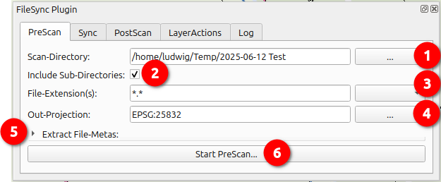
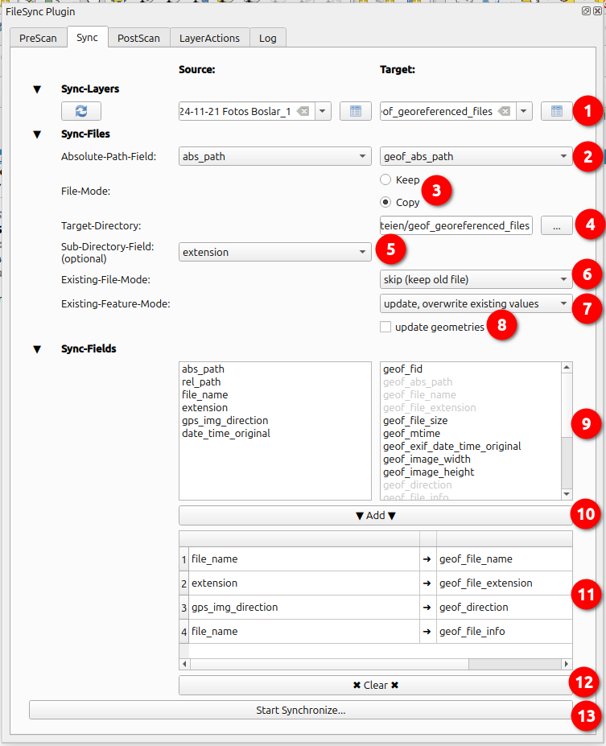
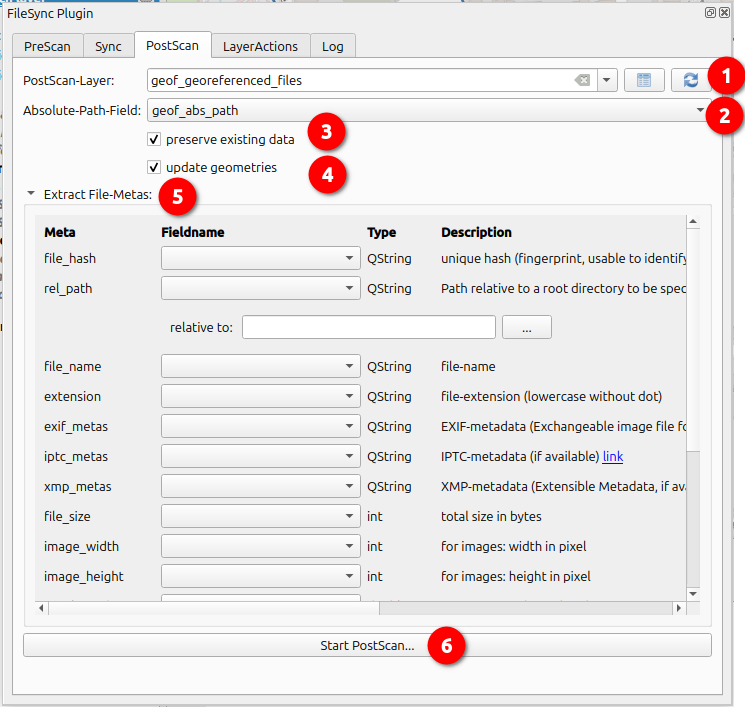
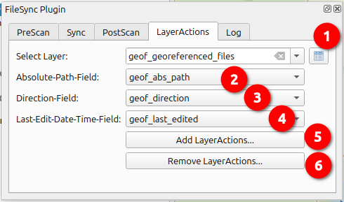
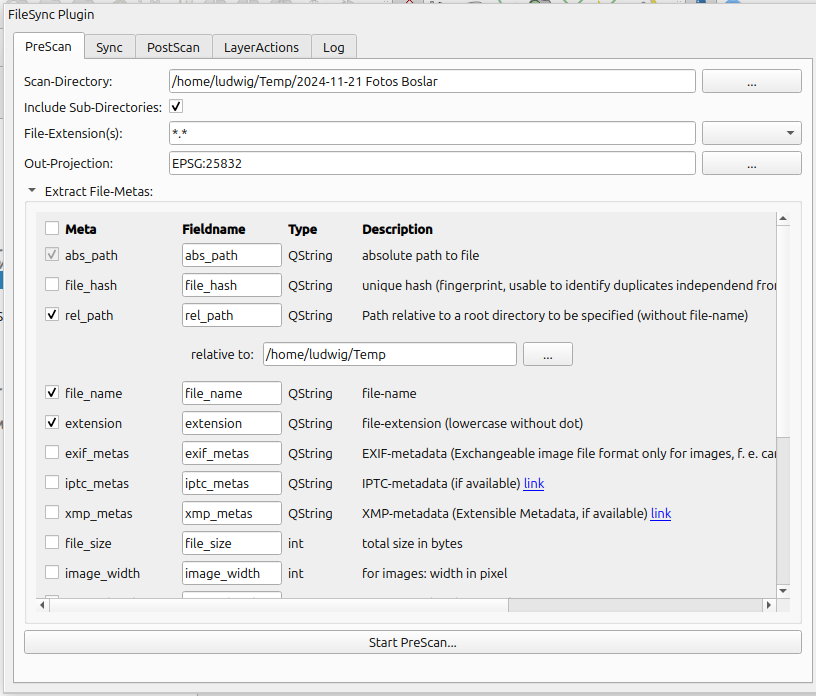
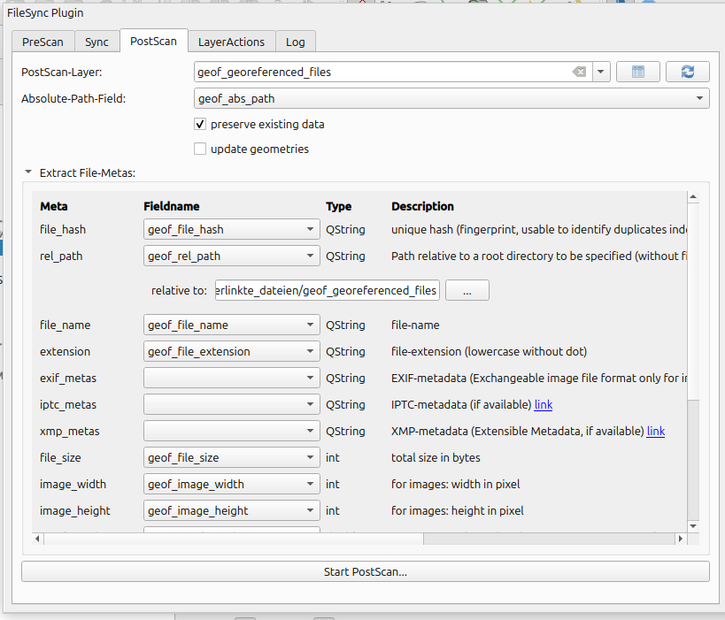
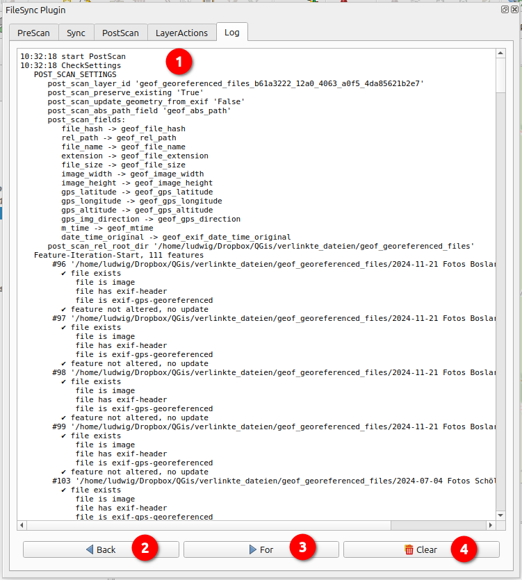

QGis plugin for extracting and storing file metadata as attribute/georeference in a point layer.
Original purpose: Digital photos with GPS-lat/lon coordinates in Exif-header.
Scenario:
A day on the road, many photos taken with the cell
phone, unfortunately noticed too late that the photos were stored
without GPS coordinates :-(
Result: A bunch of photos,
unfortunately without information about where and when exactly they
were taken.
Now it would be nice to have a point layer with
photo locations, shooting direction, time of shooting...
The plugin offers assistance for precisely this purpose, to
|  |
|
 open file with associated
application
open file with associated
application
Purpose is the synchronization of temporary PreScan-results with an existing "regulary" pointlayer, aka photo-archive. In this way, the georeferenced set of files can be supplemented with new PreScan results.
Note:the Plugin expects absolute paths, this can lead to differences according to the runtime-environment the plugin is used (unix vs. windows, changes in drive letter or directory-structure). The plugin always writes paths in Posix notation, '/' (slash) instead of '\' (backslash). If necessary, the path specifications must be adapted to the runtime environment.
|  |
|
In this mode, metadata of already referenced files of a layer can be supplemented or updated.
|  |
|
open referenced file with
associated applicationWith recording-direction-field and contents, the point is decorated by a temporarily flashing arrow.
Geometry editing:
Note: In contrast to QGis on-board tools, digitization can also be carried out with this tool if no geometry is yet available, e.g. after pre-scans of files without GPS information.
|  |
|
| PreScan | PostScan |
|---|---|
| (Input fields for the field names in the subsequently created PreScan-result-layer) | (DropDowns to select matching columns in an already existing layer) |
|  |  |
| Name | Content | Notes |
|---|---|---|
| abs_path | absolute path | Mandatory basis ➞ automatically selected |
| file_hash | sha1-Hash | calculated from file-content, unique "fingerprint", enables the duplicate search independent of file names/metadata Wikipedia: Secure_Hash_Algorithm |
| rel_path | relative path | Path relative to the specified root directory |
| file_name | file name | may be different to original if synced with file-mode "copy" |
| extension | file-extension | lowercase, without dot |
| exif_metas | Exif-metadata | JPEG-Fileheader with lots of informations about camera,
recording-time, GPS-coordinates... Wikipedia:
Exif Stored stringified. |
| iptc_metas | IPTC-Metadaten | Fileheader with user-definable metadata according to Wikipedia: IPTC_Information_Interchange_Model Stored stringified. |
| xmp_metas | XMP-Metadaten | Fileheader with user-definable metadata according to Wikipedia: Extensible_Metadata_Platform Stored stringified. |
| file_size | Filesize in byte | |
| image_width | Image-width in pixel | only for grafics |
| image_height | Image-height in pixel | only for grafics |
| gps_latitude | latitude of recording-point | extracted from Exif-Header, WGS84 |
| gps_longitude | longitude of recording-point | extracted from Exif-Header, WGS84 |
| gps_altitude | geodetic altitude of recording-point | extracted from Exif-Header |
| gps_img_direction | image-direction | extracted from Exif-Header, Angle towards north clockwise |
| m_time | Modification Time: timestamp of last modificaton | Wikipedia: MAC_times |
| c_time | Creation Time: timestamp of file-creation | according to runtime-environment also 'Change time' ➞
timestamp of last metadata-change (owner, permissions...) Wikipedia: MAC_times |
| a_time | Access Time: timestamp of last read access | Wikipedia: MAC_times |
| date_time_original | Recording timestamp | extracted from Exif-Header, value according to system setting of the recording device (e.g. mobile phone...) |
|  |
|
| Author: | Ludwig Kniprath |
| Mailto: | ludwig[at]kni-online.de |
| Version: | 1.0.0 (2025-06) |
| The plugin was developed with the current actual QGis-version "3.44.0-Solothurn" but should run on recent (LTR) versions. | |
| Source-code and tracker https://github.com/Ludwig-K/QGisFileSync/ | |
| The project is licensed under the GNU GPL 2 license. | |